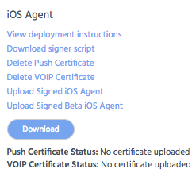

These options are common to all iOS Agent settings, with some additional ones for iOS using no EMM.
You also have the option to create an Apple Developer Enterprise account for Appthority and allow us to handle signing your app. Contact Appthority to set this up.
Some options toggle, depending on the state, such as whether a certificate has been uploaded.
